地政学
パリはフランス国家の中枢であり、EU、地中海、アフリカ圏、旧植民地との関係が集まる都市です。官庁、外交、デモ、警備、記念式典が街路に現れ、共和国理念と現実の緊張を映します。首都集中への反発もここに集まります。
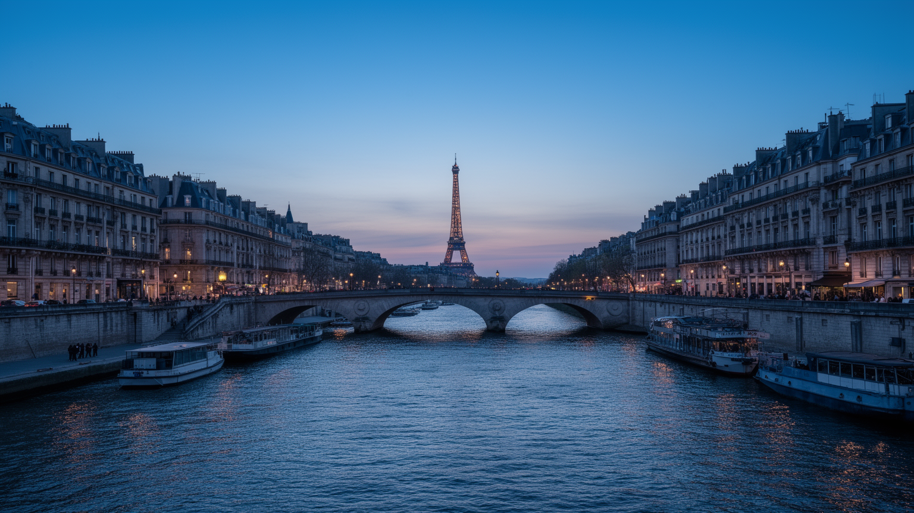
🇫🇷 フランス / ヨーロッパ / World City Atlas
国家、芸術、観光、移民社会、共和国の理念がセーヌ川沿いで重なる都市。美しい中心部だけでなく、郊外、労働、宗教、住宅、気候リスクまで読むことで、パリの現在が立体的に見えてきます。
都市の骨格
パリはセーヌ川沿いの記念碑的中心、放射状の大通り、環状道路、郊外鉄道が重なる都市です。中心の美しさは、国家行政、観光経済、移民の生活圏、周辺自治体の労働によって支えられています。
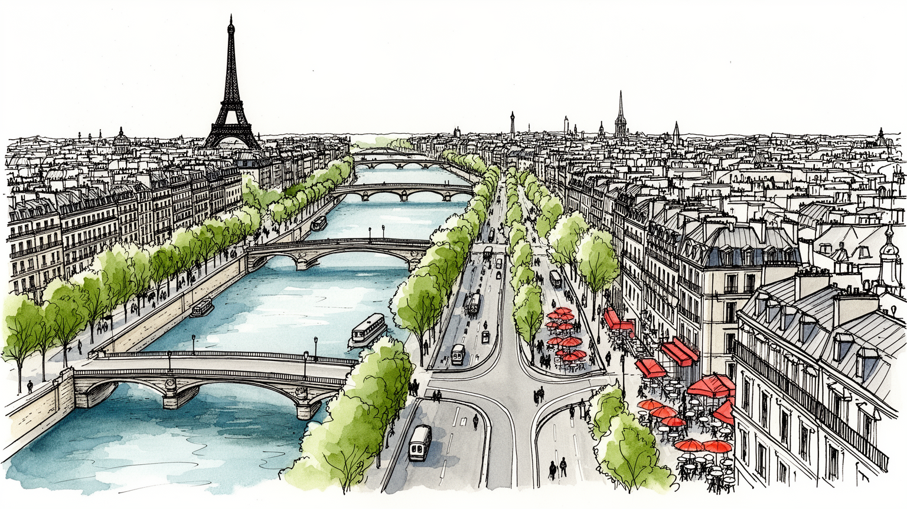
パリはフランス国家の中枢であり、EU、地中海、アフリカ圏、旧植民地との関係が集まる都市です。官庁、外交、デモ、警備、記念式典が街路に現れ、共和国理念と現実の緊張を映します。首都集中への反発もここに集まります。
観光と高級ブランドだけでなく、行政、金融、大学、研究、交通、清掃、介護、飲食、物流が都市を支えます。華やかな中心を、郊外から通う多様な労働者が毎日動かしています。職住の距離が格差を強く映しています。
カトリック遺産、世俗主義、イスラム教、ユダヤ教、アフリカ系やアジア系の生活文化が近接します。美術館や劇場だけでなく、礼拝、学校、食、市場も都市文化の深い層です。信仰と公共性の緊張も今続いています。
観光客は美術館、宮殿、川岸、カフェを楽しみますが、住民には家賃、通勤、治安、学校、公共交通、熱波が日々の課題です。名所の魅力と生活の負担を同時に見る必要があります。短期滞在と日常が強く重なります。
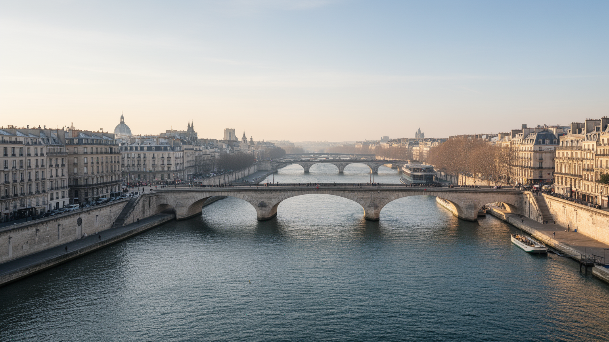
パリの地理を読む入口は、セーヌ川とそれをまたぐ橋、川中の島、左右両岸を結ぶ大通りです。川は観光写真の背景である前に、王権、教会、大学、商業、行政施設が集まる軸でした。中心部は比較的コンパクトですが、実際の都市圏は環状道路の外へ広がり、郊外鉄道、メトロ、バス、高速道路が毎日の生活を結びます。美しい石造りの街並みは内側の秩序を見せますが、物流施設、空港、団地、業務地区、大学キャンパスは周辺に分散します。川沿いの記念碑と郊外の駅を同じ地図に置くと、観光都市と生活都市の差が見えます。パリの便利さは徒歩で巡れる中心だけでなく、周辺自治体から中心へ通う人の移動に支えられています。セーヌ川、大通り、環状道路、郊外線を重ねて見ると、都市の華やかさと分断が同時に読み取れます。橋は景観を結びますが、家賃や雇用の条件までは簡単に結びません。地形と交通は、誰が中心へ近づけるのかを決める社会の骨格でもあります。さらに空港と高速鉄道は、パリを欧州、北アフリカ、世界の観光市場へつなぎます。その接続は富を呼びますが、混雑、運賃、騒音、郊外開発の負担も生みます。移動の速さは都市の力であり、同時に不平等を測る目盛りです。駅前の再開発や新線の整備は、この境界を動かす可能性があります。境界をどう越えるかが都市圏の課題です。
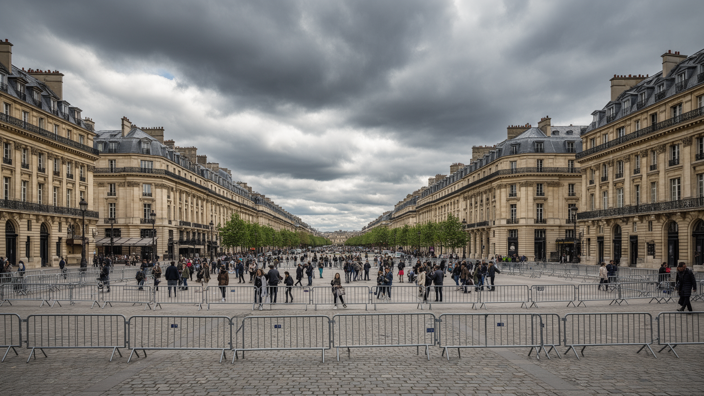
パリはフランス共和国の首都として、大統領府、国会、官庁、裁判所、大使館、軍事記念空間を抱えます。政治は建物の中だけに閉じず、広場、橋、大通り、駅前の警備、式典、デモ、追悼、ストライキとして街に現れます。共和国は自由、平等、友愛を掲げますが、移民、宗教、警察、郊外、労働条件をめぐる対立もパリに集まります。観光客が歩くシャンゼリゼやセーヌ河畔は、国家の演出空間であると同時に、市民が異議を示す舞台でもあります。テロへの警戒、公共施設の警備、宗教的表現への規制、労働運動の伝統は、開かれた都市と管理される都市の両面を見せます。パリの政治性を読むには、壮麗な建築や式典の美しさだけでなく、誰が広場に立ち、誰が排除され、どの声が共和国の言葉として扱われるのかを見る必要があります。中央集権の強さは効率を生みますが、地方や郊外から見ると、決定が首都に偏る感覚も生みます。パリは国家の顔であり、国家への批判が最も見える場所でもあります。警察車両、バリケード、労働組合の旗、追悼の花は、都市の景観を一時的に変えます。首都の道路は移動路であるだけでなく、国家と市民が互いを確認する政治的な舞台です。共和国の言葉が抽象的であるほど、住宅、宗教、雇用の現場でその実効性が試されます。政治は理念と生活の距離に現れます。今も問われ続けます。
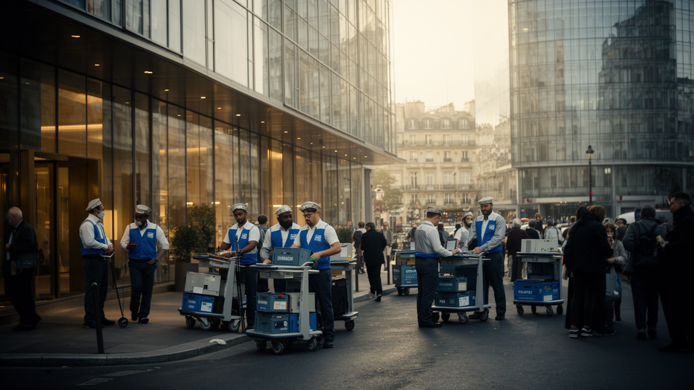
パリ経済は観光と芸術だけではありません。行政、金融、保険、法律、大学、研究機関、出版、映像、見本市、航空、情報産業、高級ブランドが重なり、フランス経済の意思決定を集めます。ラグジュアリー産業は世界の消費文化を引き寄せますが、その背後には販売、縫製、物流、清掃、警備、ホテル、飲食、翻訳、保守、介護といった膨大な仕事があります。中心部で高付加価値の仕事が生まれるほど、低賃金の現場労働者は郊外から長く通勤し、家賃と交通費に圧迫されます。観光客が経験する優雅さは、朝早い搬入、夜間清掃、多言語対応、混雑管理、公共交通の維持に支えられています。移民やその子どもたちは、都市の労働力であると同時に、文化、食、スポーツ、音楽を作る担い手でもあります。パリの産業を読むには、ブランドの店舗や金融地区だけでなく、駅の裏側、ホテルの厨房、郊外の倉庫、大学の研究室を見る必要があります。都市の価値は、表に見える文化資本と、見えにくい労働条件の両方で決まります。華やかさを維持するには、働く人が住み続けられる都市であることが不可欠です。見本市や国際会議は商談を生み、空港、通訳、警備、清掃、ケータリングまで多くの職を動かします。高級消費の表面だけでなく、その準備と後片付けまでが都市経済です。労働争議やストライキが都市機能を止めることも、働く人の存在を可視化します。
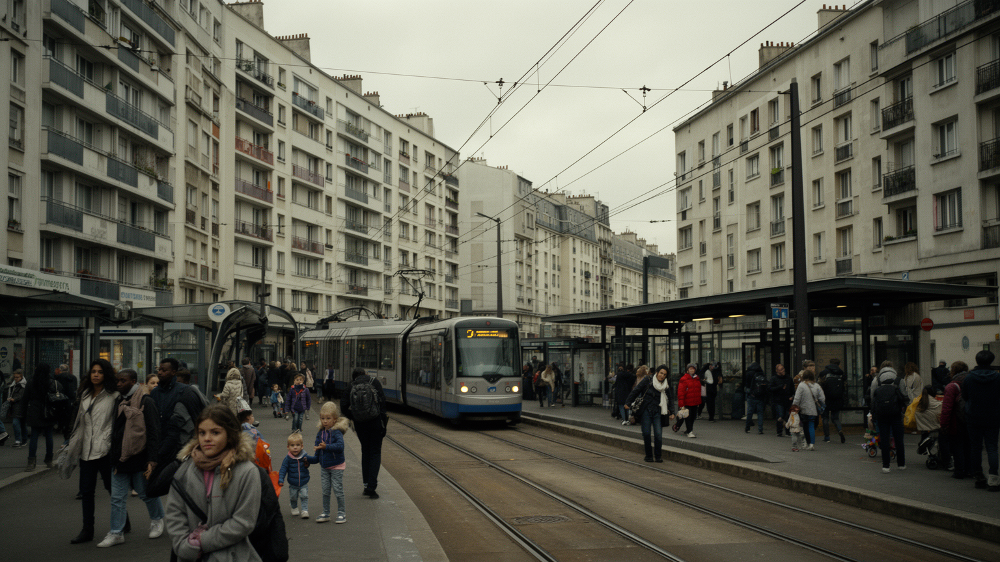
パリの住宅問題は、歴史的中心部の保存と、周辺に広がる生活圏の格差を同時に考えなければ見えません。中心部は景観規制と観光需要によって価値が高く、短期滞在や投資の対象にもなります。一方、郊外には公共住宅、移民家庭、若年層、低所得労働者、広い工業跡地、新しい再開発地区が重なります。環状道路は地理的な境界であると同時に、社会的な心理境界でもあります。中心のカフェや美術館で働く人が、その近くに住めるとは限りません。通勤時間、学校、治安、警察との関係、公共施設の質は、居住地によって大きく変わります。郊外は単なる問題地域ではなく、音楽、スポーツ、宗教、家族、商店、移民文化が育つ場所でもあります。しかし、失業、差別、交通の不便、行政サービス不足が重なると、若者の機会は狭まります。パリを都市圏として読むには、中心の美しさと郊外の生活を切り離さないことが重要です。住宅は市場価格の問題ではなく、誰が都市の近くで働き、学び、文化に参加できるのかを決める基盤です。保存された景観の外側で、都市の未来が作られています。再開発で駅前が整っても、家賃が上がり、地域の店や友人関係が失われれば生活は薄くなります。住まいは住所ではなく、教育、仕事、医療、安心へ接続する入口です。中心を守る政策と郊外を支える政策は、同じ住宅政策として考える必要があります。
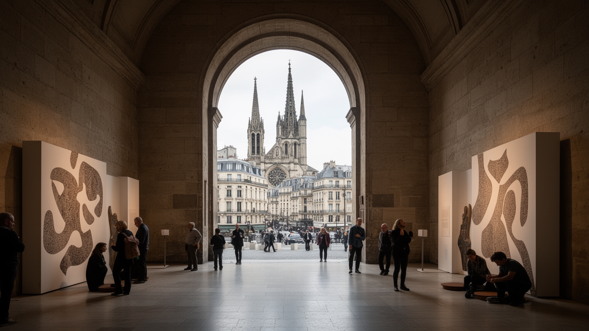
パリは美術館、劇場、文学、映画、ファッション、建築の都市として知られますが、その文化はカトリックの記憶、共和国の世俗主義、ユダヤ教、イスラム教、アフリカ系やアジア系の生活文化と結びついています。大聖堂や教会は歴史遺産であると同時に、国家儀礼や追悼の場でもあります。モスク、シナゴーグ、移民街の商店、市場、学校は、信仰と言語と家族の生活を支えます。フランスの世俗主義は公共空間を宗教から独立させようとしますが、実際には服装、学校、食、差別、治安をめぐる議論を生みます。文化都市としてのパリを読むには、芸術作品の展示だけでなく、誰の記憶が展示され、誰の信仰や生活が見えにくくされるのかを考える必要があります。植民地の歴史、移民の労働、アラブ系やアフリカ系住民の表現は、現代の音楽、映画、料理、スポーツにも表れます。パリの文化は完成した古典ではなく、共和国の理念と多民族社会が毎日調整される場所です。美しさは静かな保存だけでなく、対立を抱えながら共に暮らす力からも生まれます。劇場や映画館の明かり、礼拝の時間、学校給食の選択、追悼の沈黙は、同じ都市の中にあります。文化は施設の数ではなく、違う記憶をどう扱うかで深さが決まります。公的な中立を守ることと、住民の背景を無視しないことの間に、難しい均衡があります。
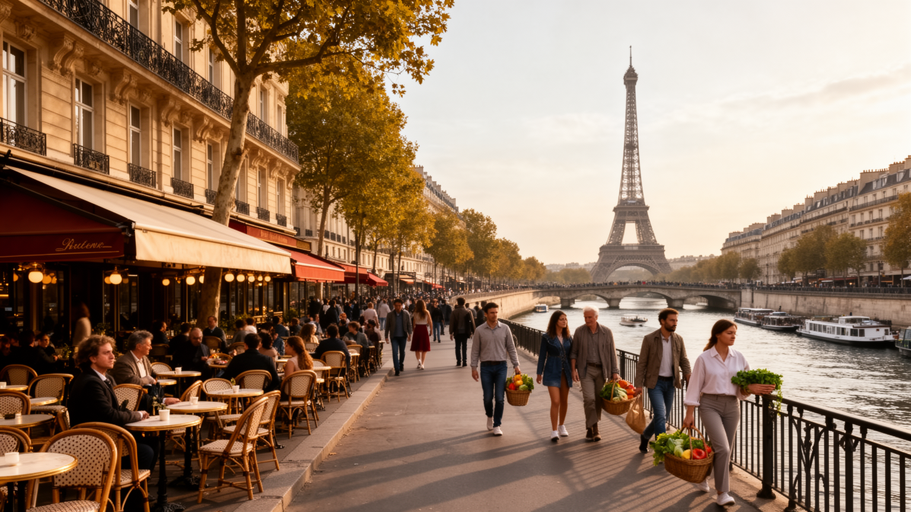
パリ観光の魅力は、ルーヴル、エッフェル塔、ノートルダム、宮殿、美術館、セーヌ河畔、カフェ、書店、パン屋、街路の散策が短い距離でつながる点にあります。訪問者は都市全体を舞台のように体験できますが、住民にとっては混雑、短期賃貸、物価、騒音、交通規制、治安、サービス業の労働負担が現実です。観光が成功するほど、日用品の店が土産物や高価格の飲食へ変わり、住宅が宿泊施設へ転用される圧力も強まります。文化施設や歴史的景観は公共財である一方、世界的な消費の対象でもあります。パリを歩く楽しさは本物ですが、その楽しさを支える清掃、警備、交通、修復、案内、飲食、宿泊の労働は見えにくいままです。観光都市として持続するには、訪問者を迎えるだけでなく、住民が日常の買い物、通学、休息、医療を続けられる条件を守る必要があります。名所巡りは都市の入口として有効ですが、そこから少し離れた市場、公園、団地、駅前、学校を見ることで、観光の光と生活の影が同時に分かります。パリの価値は、訪問者の憧れと住民の暮らしをどれだけ両立できるかにかかっています。修復工事や大型行事は都市の魅力を更新しますが、警備、価格上昇、混雑も増やします。観光は収入源であると同時に、公共空間を誰のために使うかという問いでもあります。訪問者の視線だけでは足りません。
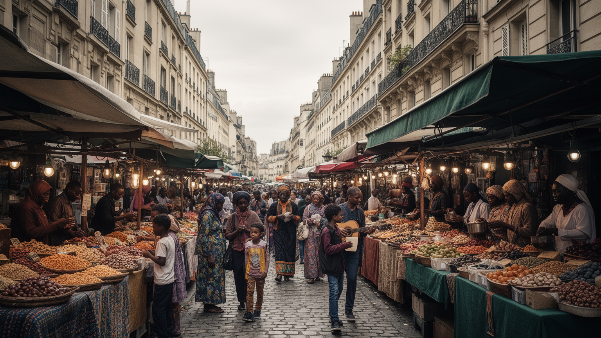
パリの多民族性は、単に国際都市だから生まれたものではありません。北アフリカ、西アフリカ、カリブ海、東南アジアなど、フランスの植民地支配や戦後労働移民の歴史が深く関わっています。移民とその子どもたちは、建設、交通、清掃、工場、介護、飲食、教育、芸術、スポーツで都市を支えてきました。市場、理髪店、礼拝所、食堂、音楽、言語は、郊外や北東部の地区に生活の記憶を残します。一方で、人種差別、警察との緊張、雇用差別、学校格差、宗教表現への疑いは、共和国が掲げる平等との間に矛盾を作ります。植民地の記憶は博物館の展示だけではなく、家族の移動、国籍、名前、言語、追悼行事、抗議運動として現在に続いています。パリを読むには、中心部の記念碑と移民地区を別々に扱わず、同じ国家史の中に置く必要があります。旧植民地から来た人々の文化は、都市の食、音楽、映画、文学、スポーツを豊かにしましたが、その貢献が正当に扱われるかは今も問われています。共和国の普遍主義は、差を消す言葉にもなり、平等を要求する言葉にもなります。その二面性がパリの社会問題を形作ります。家族史を語る場、植民地戦争を記憶する場、警察暴力に抗議する場は、観光地図には小さくしか載りません。しかし、そこにこそ現代パリの政治と感情があります。記憶は街区ごとの生活に残ります。
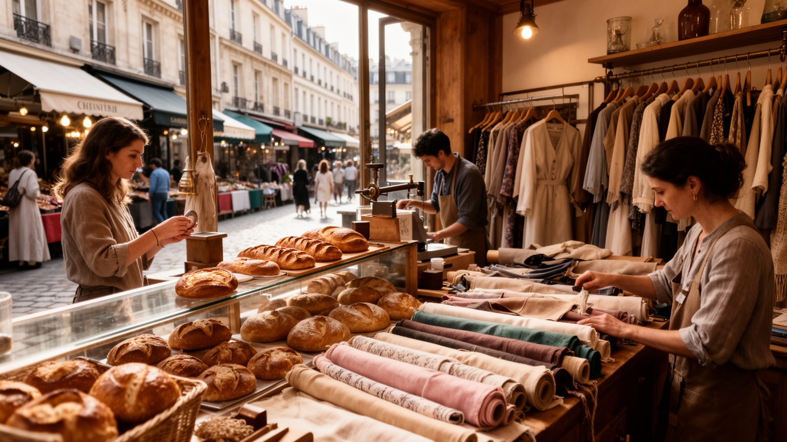
パリの食とファッションは、洗練された消費文化として世界に知られます。カフェ、ビストロ、パン屋、菓子店、市場、高級レストラン、ワイン店は、観光の魅力であると同時に、地区ごとの生活リズムを作ります。ファッションはランウェイや高級ブランドだけでなく、縫製、革、香水、写真、販売、物流、広報、教育に支えられた産業です。美しさを売る都市では、職人の技能、移民労働、若いデザイナーの不安定な仕事、店舗賃料、観光消費が複雑に絡みます。食文化もフランス料理だけではなく、マグレブ、西アフリカ、レバノン、ベトナム、中国、日本、カリブの味が日常に入り、都市の多民族性を表します。高級文化と庶民的な市場が近接することがパリの厚みですが、物価上昇によって小さな店や作り手が中心から押し出される危険もあります。パリの美意識を読むには、完成品の華やかさだけでなく、誰が作り、誰が売り、誰が買えないのかを見る必要があります。食と服は趣味ではなく、階級、移民、労働、ジェンダー、観光経済を映す都市の表面です。日常のパン屋や市場にも、世界都市の構造が表れています。調理場の長時間労働、見習い職人の低賃金、店舗の家賃、流行の速度は、優雅な商品に隠れがちです。味や服の美しさは、労働条件と切り離して語れません。売り場の笑顔の奥に都市の分業があります。
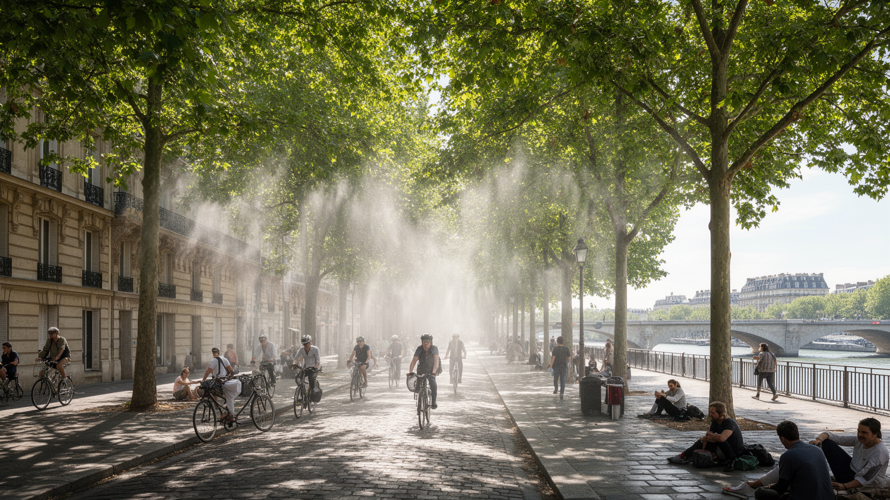
パリの気候は穏やかに見えますが、近年は夏の熱波、豪雨、空気質、緑地不足が都市の課題になっています。石造りの街並み、舗装面、密な建物、地下交通は、暑さをため込みやすく、高齢者、子ども、屋外労働者、断熱の弱い住宅に住む人を危険にさらします。セーヌ川と運河は涼しさと景観を与えますが、洪水や水質管理も必要です。街路樹、公園、学校の校庭、日陰、自転車道、歩行者空間は、観光の演出ではなく気候適応のための社会インフラです。熱波は全員に同じように来るわけではありません。エアコンを使える住宅、涼しい職場、公園に近い地区、医療へ行きやすい家庭と、そうでない人の差を広げます。都市中心部の美しい景観を守りながら、どこまで緑化し、車を減らし、公共空間を住民へ返すかは政治的な選択です。パリの環境対策を読むには、川辺の気持ちよさだけでなく、郊外の団地、学校、駅前、職場が暑さに耐えられるかを見る必要があります。気候変動は景観の問題ではなく、健康、住宅、交通、階級の問題として都市を試しています。涼める場所を公平に増やせるかが、これからのパリの生活の質を左右します。自動車を減らす政策は空気を改善しますが、配送、通勤、郊外住民への影響も調整が必要です。環境政策もまた、誰の移動を優先するかという都市政治です。涼しい街路は命を守る公共財です。
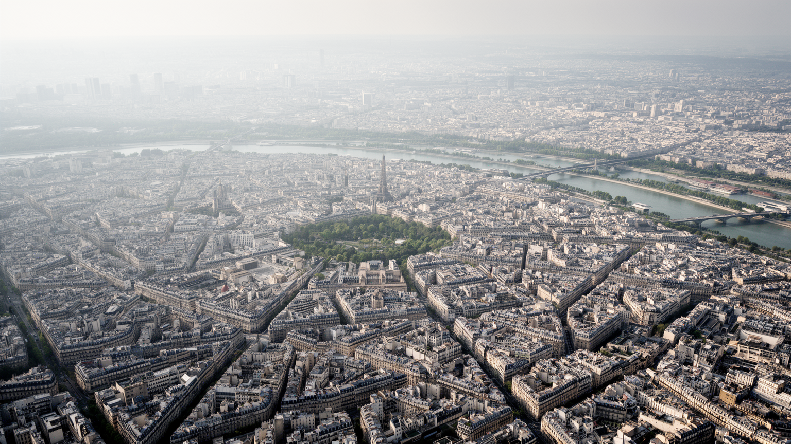
パリは、世界中の人が憧れる美しい都市であると同時に、共和国、移民、住宅、労働、宗教、気候をめぐる緊張が濃く見える都市です。セーヌ河畔、宮殿、美術館、カフェ、大通りは都市の強い記号ですが、その周囲には郊外からの通勤、清掃や警備、移民家庭の教育、家賃の上昇、警察との緊張、熱波への備えがあります。中心部の保存が都市の価値を高めるほど、誰がその中心に住み、働き、休めるのかが問われます。パリの魅力は過去の芸術遺産だけではなく、世界から来た人々が言語、食、信仰、音楽、労働を持ち込み、共和国の言葉を日々作り直している点にもあります。観光客の視線では都市は完成した舞台に見えますが、住民の視線では、通勤、学校、家賃、治安、公共空間、差別、医療が続く生活の場所です。パリを読むことは、美しい中心と見えにくい周縁を同時に見ることです。国家の象徴であり、芸術市場であり、移民社会であり、気候適応を迫られる生活圏でもあるからこそ、パリは世界都市の成功と矛盾を一枚の地図で示します。憧れを壊すためではなく、都市の本当の強さを測るために、その矛盾まで見る必要があります。美術館の静けさ、郊外駅の混雑、デモの声、川辺の散歩、夏の暑さは別々の話ではありません。それらを同じ都市の現実として重ねると、パリの強さと脆さが見えてきます。